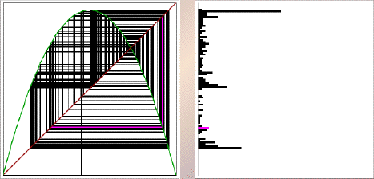

Purpose To learn the method of graphical iteration to generate time series for some simple functions, and to develop some familiarity with several visual methods for seeking patterns in these time series.
Material The Iterative Dynamics software, or some similar package.
Background Graphical iteration: a simple method of visualizing sequences generated by iterating a function. Time series, histograms, and return maps: three geometric ways to discover patterns in this data.
Sample Explorations of the logistic map, or the humble parabola still holds some surprises.
Conclusion Graphical methods help generate numerical sequences, and also aid in the discovery of patterns. Different tools reveal different kinds features of these patterns.